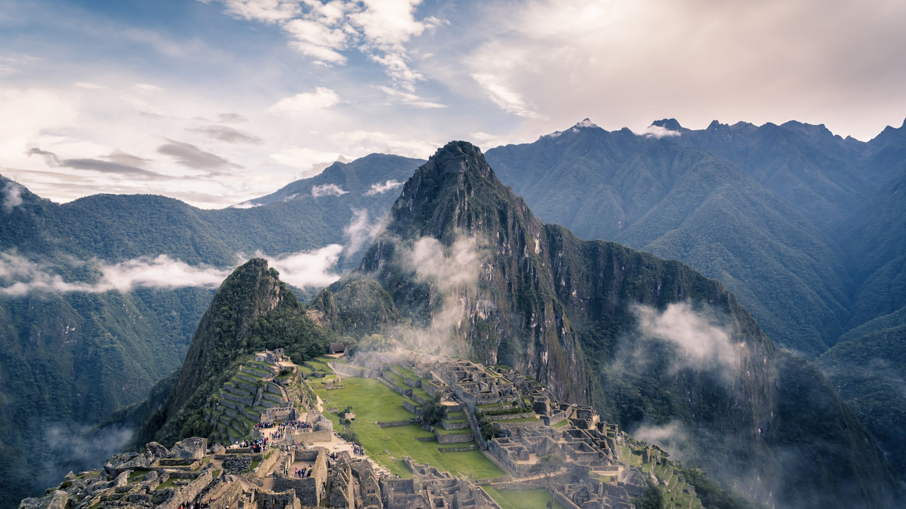
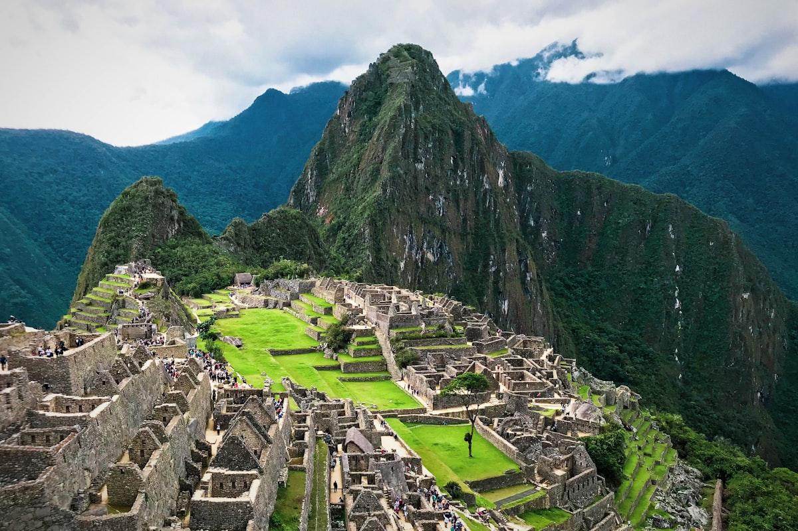

Machu Picchu, the 15th-century Inca citadel high in the Peruvian Andes, is one of the most searched-for destinations on Earth : and one of the most regulated. There is no separate "Machu Picchu visa": you enter Peru on its national rules, and then you need a timed citadel ticket booked online. In 2026 most tourists : including citizens of the United States, the EU, the United Kingdom, Canada, Australia, Brazil, Argentina, Japan and many more : enter Peru visa-free. This guide covers entry rules by nationality, how to book tickets and circuits, the Inca Trail permit, getting there and altitude.
| Key Facts 2026 | |
|---|---|
| Machu Picchu is in | Peru : Cusco region, reached via Aguas Calientes (Machu Picchu Pueblo) |
| Visa-free tourism | US, UK, EU/Schengen, Canada, Australia, NZ, Japan, Brazil, Argentina, Chile & 100+ others |
| Length of stay | Usually up to 90 days on arrival; 183 days maximum per calendar year |
| Citadel entry ticket | Mandatory & separate : book online at tuboleto.cultura.pe (circuits 1-4, timed) |
| Daily visitor cap | Up to ~5,600/day in high season : book 1-3 months ahead |
| Passport validity | 6 months recommended; bring the same passport used to book the ticket |
| Altitude | Cusco 3,400 m (acclimatise 1-2 days); citadel 2,430 m |
| Official portals | migraciones.gob.pe (entry) · tuboleto.cultura.pe (ticket) |
There Is No "Machu Picchu Visa" : You Enter Peru First
Machu Picchu is a UNESCO World Heritage Site in the Cusco region of southern Peru, perched at about 2,430 m. It is not a separate country or special zone, so there is no "Machu Picchu visa". Whatever lets you into Peru lets you reach the citadel. In practice you need two separate things: (1) the right to enter Peru : visa-free for most nationalities, or a tourist visa for a few : and (2) a timed Machu Picchu entry ticket, bought online before you travel. Your entry to Peru is decided once, on arrival at Lima or Cusco airport.
Visa-Free Entry for Peru (Most Tourists)
The large majority of visitors enter Peru visa-free for tourism. This includes citizens of:
- The United States, Canada, the United Kingdom, all 27 EU/Schengen states, Switzerland and Norway
- Australia, New Zealand, Japan and South Korea
- Brazil, Argentina, Chile, Colombia, Mexico, Ecuador and most of Latin America
Immigration officers usually grant up to 90 days on arrival, and the maximum tourist stay is 183 days within a calendar year. Your entry is recorded electronically through the Andean Migration Card (TAM) : keep proof of the date you entered. No advance application is needed for these passports; just arrive with a valid passport, an onward ticket and proof of funds.
Visa-Required Nationalities & the US/Schengen Exemption
Some nationalities : including India, China and several African and Asian countries : normally need a tourist visa for Peru. However, Peru applies a useful exemption: citizens of these countries can enter visa-free for up to 180 days if they already hold a valid, used visa or residence permit from the United States, Canada, the United Kingdom, a Schengen country or Australia. Without one of those, you must apply for a Peruvian tourist visa at a Peruvian consulate before travelling. Always confirm your own nationality with the nearest consulate, as the list changes.
Machu Picchu Entry Tickets : Circuits, Caps & Booking
The citadel ticket is mandatory, separate from your Peru entry, and sold online at the official portal tuboleto.cultura.pe. Key 2026 rules:
- Circuits: the site is divided into routes (Circuits 1-4, each with sub-routes). You must follow the circuit printed on your ticket : Circuits 1 and 2 include the classic postcard viewpoints.
- Timed entry: entry matches the time slot on your ticket, with a short grace period and no re-entry.
- Price: around USD 45-55 for a foreign adult, depending on the circuit; students and children pay less with valid ID.
- Guide: a licensed guide is required to enter, and you must carry the same passport used to book.
- No changes: tickets are tied to the date, non-transferable and non-refundable : daily numbers are capped (up to ~5,600 in high season), so book 1-3 months ahead for May-September.

The Inca Trail Permit (Optional Multi-Day Trek)
If you want to hike the classic Inca Trail to Machu Picchu, you need a separate permit in addition to your citadel ticket. Only around 500 places are released per day (including porters and guides), they must be booked through a licensed operator, and they sell out 4-6 months ahead. The trail closes every February for maintenance, and in 2026 Inca Trail arrivals enter the citadel via Circuit 3B. The Salkantay and Lares treks are scenic alternatives that do not require the Inca Trail permit.
Best Time to Visit Machu Picchu
Machu Picchu is open year-round, but the weather splits into two clear seasons:
- May-September (dry season): the most popular time : clear skies, the best photos and reliable trekking, but the busiest. Book tickets and trains early.
- November-March (wet season): greener, cheaper and quieter, with afternoon rain and some cloud. The Inca Trail closes every February.
- April & October: good shoulder months with fewer crowds and generally settled weather.
How to Reach Machu Picchu
There is no road or airport at the citadel itself, so the journey is part of the trip:
- Fly to Lima (LIM), then take a domestic flight to Cusco (CUZ), the gateway city.
- Take the train from Cusco (Poroy) or Ollantaytambo in the Sacred Valley to Aguas Calientes / Machu Picchu Pueblo, operated by PeruRail or Inca Rail.
- Ride the Consettur shuttle bus up the switchbacks from Aguas Calientes to the citadel entrance (about USD 24 round-trip), or walk up.
Your Peru entry stamp or record is issued at your first international airport (usually Lima), not at the citadel.
Altitude, Acclimatisation & Health
The biggest practical risk is altitude, not paperwork. Cusco sits at about 3,400 m, where altitude sickness (soroche) is common. Spend 1-2 days acclimatising in Cusco or, better, the lower Sacred Valley (around 2,800 m) before any trek. Stay hydrated, go easy on alcohol, and consider coca tea or medication your doctor recommends. The citadel itself is lower at 2,430 m. A yellow-fever vaccine is recommended only if you combine the trip with Peru's Amazon region.
Documents for Machu Picchu
- Passport valid 6+ months beyond your stay : the same passport used to book your ticket
- Machu Picchu citadel ticket (printed or PDF on your phone) with your circuit and time slot
- Train ticket (Cusco/Ollantaytambo ↔ Aguas Calientes) and the Consettur bus ticket
- Onward or return ticket out of Peru and proof of sufficient funds
- Peru tourist visa : only if your nationality requires one (see above)
- Student ID for discounts; yellow-fever certificate only if adding an Amazon trip
Money, Currency & Costs
Peru's currency is the sol (PEN). Cards are widely accepted in Cusco, the Sacred Valley and Aguas Calientes, but carry some cash in soles for the bus, small restaurants, tips and market stalls. ATMs are available in Cusco and Aguas Calientes. Big-ticket items : citadel tickets, trains and guided treks : are often quoted in US dollars but can usually be paid by card.
Frequently Asked Questions
Do I need a visa to visit Machu Picchu in 2026?
There is no separate Machu Picchu visa : you enter Peru on its national rules. Most tourists (US, UK, EU/Schengen, Canada, Australia, Japan, Brazil, Argentina, Chile and more) enter visa-free. Separately, you must book a timed Machu Picchu citadel ticket online before you go.
How long can I stay in Peru as a tourist?
Immigration officers usually grant up to 90 days on arrival, and the maximum tourist stay is 183 days within a calendar year. Your entry is recorded electronically (the Andean Migration Card / TAM) at Lima or Cusco airport : keep proof of your entry.
Do Indian citizens need a visa for Peru and Machu Picchu?
Indian nationals can enter Peru visa-free for up to 180 days if they hold a valid (already-used) US, Canada, UK, Schengen or Australia visa or residence permit. Without one of those, Indian travellers must apply for a Peruvian tourist visa at a consulate before travelling.
How do I book Machu Picchu entry tickets?
Buy tickets online at the official portal tuboleto.cultura.pe. Choose one of the circuits (1-4) and a timed entry slot; a standard foreign-adult ticket costs about USD 45-55. Tickets are tied to the date, non-refundable and non-transferable, you must bring the same passport used to book, and a licensed guide is required to enter.
How far in advance should I book Machu Picchu?
Book the citadel ticket 1-3 months ahead for the May-September high season. The classic Inca Trail permit must be booked 4-6 months ahead through a licensed operator : places sell out fast and the trail closes every February for maintenance.
Which airport do I use and how do I reach Machu Picchu?
Fly into Lima (LIM), then take a domestic flight to Cusco (CUZ). From Cusco or Ollantaytambo, take a PeruRail or Inca Rail train to Aguas Calientes (Machu Picchu Pueblo), then a short Consettur shuttle bus up to the citadel entrance.
When is the best time to visit Machu Picchu?
The dry season from May to September offers the clearest skies and is the most popular (book early). The wet season from November to March is greener and less crowded but rainier; the Inca Trail is closed every February.
Do I need to worry about altitude?
Yes. Cusco sits at about 3,400 m and altitude sickness is common. Acclimatise for 1-2 days in Cusco or the lower Sacred Valley before hiking. The Machu Picchu citadel itself is lower, at about 2,430 m.